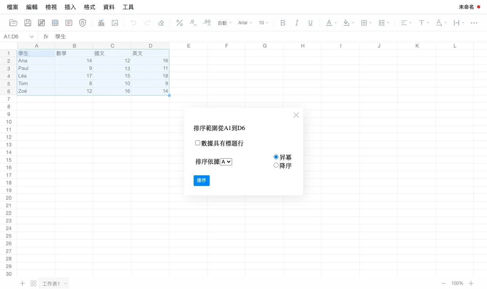
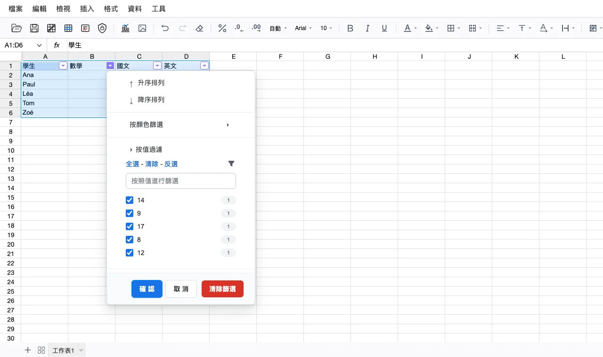
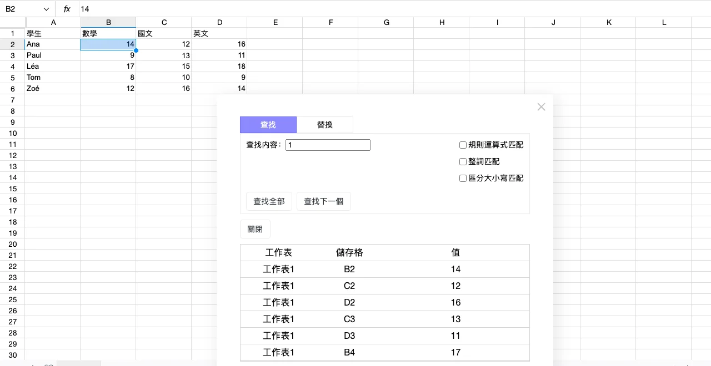

排序、篩選、尋找
排序
| 命令 | 效果 |
|---|---|
| 資料 › 排序和篩選 › 昇冪、降序 | 按選區的第一欄排序；也可用 和右鍵 |
| 右鍵 › 排序選區 | 選擇排序列、順序，以及第一列是否為標題 |

請選擇整個表，而不是單獨一欄：各列必須保持完整。含合併儲存格的範圍不能排序。
篩選
- 選擇表，包括標題。
- 資料 › 排序和篩選 › 篩選，或 ，或右鍵 › 篩選選區。
- 按一下某欄的箭頭。

| 欄的功能表 | 效果 |
|---|---|
| 升序排列、降序排列 | 對錶的列排序 |
| 按顏色篩選 | 按填滿色彩或文字色彩 |
| 按值過濾 | 勾選要保留的值；全選、清除、反選；輸入框用於尋找值 |
| 確 認 | 應用 |
| 清除篩選 | 移除表的篩選 |
被排除的列只是隱藏，不會刪除。多欄的篩選同時生效。資料 › 排序和篩選 › 清除篩選 移除篩選。
尋找、替換
Ctrl F 開啟 查找，Ctrl H 開啟 替換。

| 選項 | 效果 |
|---|---|
| 規則運算式匹配 | 尋找的文字是正規表示式：^A 找到以 A 開頭的內容 |
| 整詞匹配 | 整個儲存格等於該文字 |
| 區分大小寫匹配 | 區分大小寫 |
| 查找全部 | 列出找到的儲存格；按一下一列即可跳轉 |
| 查找下一個 | 轉到下一個 |
| 替換、全部替換 | 一個儲存格、全部 |
尋找範圍是當前顯示的工作表。